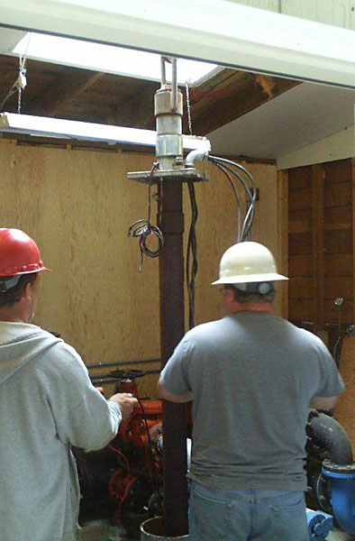

(9/19/2012) Charles Smith, Member and Resident Inspector, took these photos of the replacement of Well Pump 1, and they really ought to be shared.

Existing well pump 1 being extracted from the well casing in the pump house.
Existing well pump 1 being extracted from the well casing in the pump house.
Even with a little assistance, the couplings would not come undone. Muscle applied by Nicholson Drilling.

Did you ever wonder why you could never get an accurate depth reading in the sounding tube? Here you can see the tangle of the collapsed sounding tube and the motor wire at about 155 feet down in the well. The only thing holding the sounding tube from falling down the well completely were metal guide flanges that had been welded to the well casing. The sounding tube is a pipe that resides between the outer well casing and the inner well pipe used to determine the elevation of water in the well. Often a weight on a string is lowered down the tube until a resistance is felt – indicating the surface of the water in the well.
The submersible pump. Note the rust and scaling on the last 20 feet of the well casing.
The old submersible pump. Note that the final section of well casing is only 10 feet long. This would make the existing well only 170 feet in length. The new well is 180 feet in length.
The new well pump and motor being wired and prepared for installation.